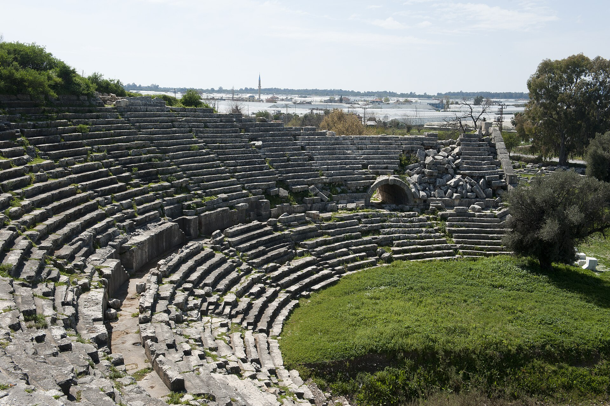

Around Fethiye and the Xanthos valley
 Telmessos · modern Fethiye
Telmessos · modern Fethiye
Telmessos
The great rock-cut Tomb of Amyntas looks down over Fethiye harbour. The city's reputation for soothsayers reached as far as Alexander.
 Upper Xanthos valley
Upper Xanthos valley
Araxa
A quiet inland city famous for one of the most informative civic inscriptions of the Lycian League era — the Araxa Decree honouring Orthagoras.
 Lycian League · vote of 3
Lycian League · vote of 3
Pinara
A theatre carved into a wooded mountainside, beneath a colossal sheer cliff honeycombed with empty tombs.
 "Brightest jewel of Lycia"
"Brightest jewel of Lycia"
Tlos
Acropolis-on-acropolis, lived in continuously from Bronze Age through Ottoman times. The Bellerophon tomb is here.
 Lycian capital · UNESCO
Lycian capital · UNESCO
Xanthos
The political and ceremonial centre of the Lycian League, where the inhabitants twice chose mass suicide over surrender.

Federal sanctuary · UNESCOLetoon
The religious centre of the Lycian League, where treaties were ratified and the trilingual stele unlocked the Lycian language.
_lead.jpg) Birthplace of Saint Nicholas
Birthplace of Saint Nicholas
Patara
Federal capital of the Lycian League, with a 5,000-seat theatre and an 18 km beach now closed at night to loggerheads.


_from_the_west_lead.jpg)